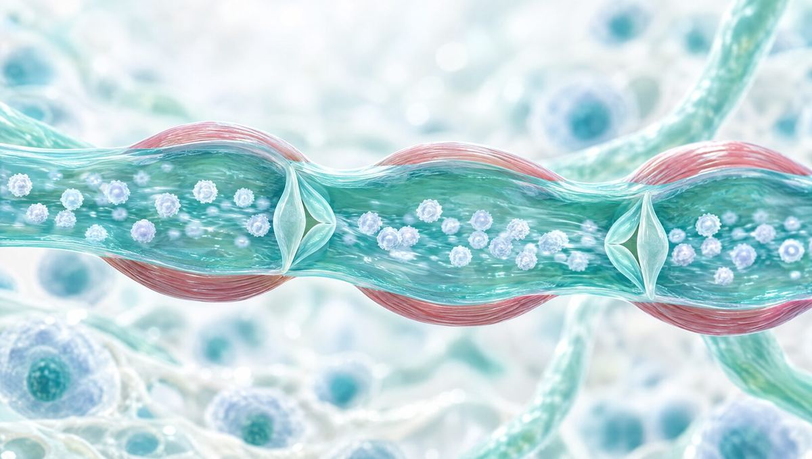
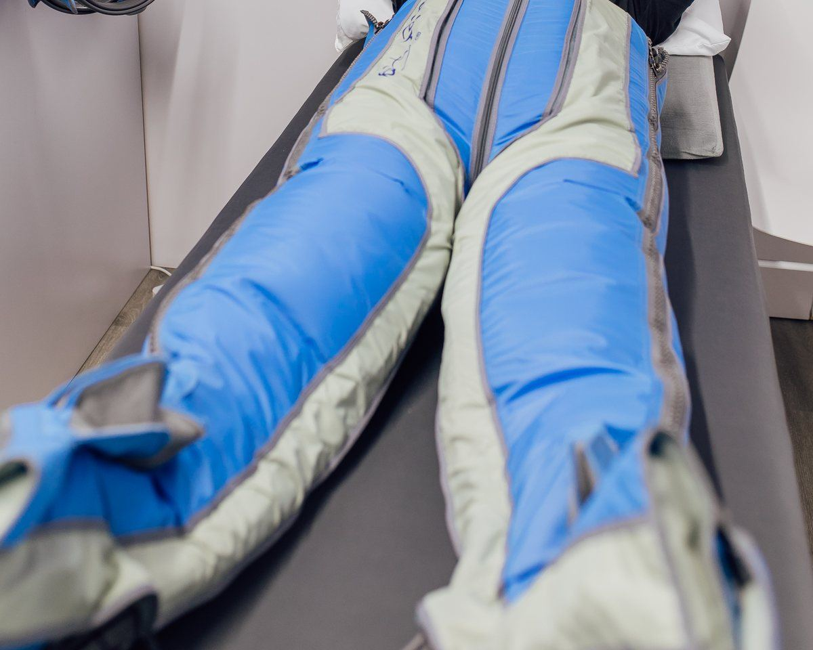

The Lymphatic Guide
what lymph does, how drainage helps, and how to use it at huemn.
The system with no pump
your heart pumps blood. nothing pumps lymph the same way.

- 1Vessel squeeze. Each segment pumps on its own.
- 2Muscle pump. Muscles press on nearby vessels.
- 3Breathing. A breath in helps draw lymph up.
Outside pressure. Air presses on the tissue and moves fluid toward the nodes.
When flow slows
fluid settles in the tissue. legs feel heavy. swelling builds.
Returns the fluid your blood leaves in tissue.
Carries immune cells to the nodes.
Gut lymph vessels absorb dietary fat.
Drains inflammatory fluid and cells.
- Swelling that lasts after a night's sleep
- One arm or leg larger than the other
- Skin that feels tight, heavy or thick
- A dent that stays after you press the skin
Sudden swelling in one leg with pain, warmth or redness can be a blood clot. Do not use compression. For chest pain or sudden shortness of breath, call 911.
The Ballancer Pro
a full lower-body garment with 24 overlapping air chambers.

- PRESSURE
- 20 to 80 mmHg, set in 1 mmHg steps
- PROGRAMS
- Wave or Ballancer, each with or without Pretreatment, which works the torso first
- MAKER
- Mego Afek, Israel. Its Lympha Press medical pumps are FDA-cleared to treat lymphedema.
Ballancer Pro: FDA 510(k) K150269, cleared as a massager. A wellness device, not a treatment for disease. Home wrap figures: specs of 8 popular units in a 2026 online review.
What the research shows
highlights from human studies of air compression.
Adding daily air compression raised the drop in arm swelling from 26% to 45%.SZUBA 2002 · 23 PEOPLE WITH LYMPHEDEMA
people saw lymph dye move toward the nodes during one session.RASMUSSEN 2016 · LEG STUDY
studies in a 2024 review: compression after exercise eased muscle soreness.MAIA 2024 · 319 PEOPLE
women after lipo plus tummy tuck. Air compression 3 times a week for 4 weeks gave smaller waist measurements.ABDELHALIM 2021 · RANDOMIZED TRIAL
These studies used medical compression pumps. Every study and its reference is in the full guide.
How often, by goal
the maker's settings. your coach adjusts them to you.
- Heavy, tired legsOne session, or a series of 12PRETREATMENT + WAVE · 40–60 mmHg · 40 MIN
- Training recovery1 to 2 a week, within a day of hard trainingPRETREATMENT + WAVE · 40–60 mmHg · 40 MIN
- Before plastic surgeryAt least 3 to 6 sessionsPRETREATMENT + BALLANCER · 40 mmHg · 40 MIN
- After surgeryEvery day or every other day, with your surgeon's OKBALLANCER · 20–40 mmHg · 20–60 MIN
- Event prep4 to 5 a week, or dailyPRETREATMENT + WAVE · 45–65 mmHg · 40–60 MIN
- Skin and toneShort sessions, kept up over timeBALLANCER · 50–80 mmHg · 20–40 MIN
New to drainage? Book 2 to 3 sessions a week for 4 weeks. Then keep it up with 1 a week.
From the Ballancer Pro Treatment Guide. Training recovery and simple start: Huemn guidance.
Pairs well with
add one to your drainage session.
Start your protocol
Houston, TX 77070
832-230-2861
Houston, TX 77007
832-979-5618
Tell us about a blood clot, heart, kidney or vein problems, pregnancy, recent surgery or cancer care.
Get the full guide
the complete lymphatic guide. 22 pages, free.
- The science of how lymph moves
- Every study, with references
- How to time sessions around surgery
- The maker's settings for each goal